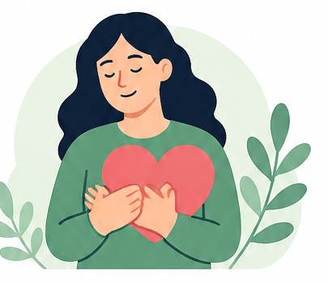

Her kan du lære om bipolar lidelse, forstå symptomerne og få konkrete råd til at håndtere sygdommen i hverdagen.

Vælg et emne
💚
Du er ikke aleneMed viden, støtte og de rette værktøjer kan livet blive bedre.
Lær om bipolar lidelse
Vælg et emne. Hvert emne åbner som en kort side, så det ikke bliver en lang tekstmur.
🧠
Hvad er det?Grundforklaring
Bipolar lidelse er en sygdom, hvor hjernen kan få svært ved at regulere humør, energi, aktivitet og søvn.
Ikke bare humørsvingninger
Alle mennesker svinger i humør. Ved bipolar lidelse kan perioderne blive så kraftige, at de påvirker søvn, dømmekraft, arbejde, relationer og hverdagen.
Forskellige faser
Man kan have depressive perioder, hypomane/maniske perioder og stabile perioder. Nogle oplever også blandingstilstand.
DepressionStabil periodeHypomaniMani
Depression kan føles som tunghed, tomhed, lav energi og tab af håb.
Typiske tegn
😴
Søvn ændrer sigMan sover meget mere, meget mindre eller vågner tidligt.
🔋
Lav energiSelv små ting kan føles uoverskuelige.
🚫
Mister lystTing der plejer at give mening, føles ligegyldige.
👥
Trækker sigMan orker ikke kontakt.
Hvad hjælper ofte?
📅
Små aftalerFå realistiske opgaver. Ikke en perfekt plan.
🛏️
Fast døgnrytmeStå op og gå i seng nogenlunde samme tid.
💬
Sig det højtKontakt behandler eller en pårørende ved forværring.
Hypomani og mani kan starte som overskud. Det er derfor, det kan være svært at opdage i tide.
Typiske tegn
⚡
Mere energiMan føler sig effektiv, stærk eller ustoppelig.
🌙
Mindre søvnMan sover mindre, men føler sig ikke træt.
🗣️
Taler mereTankerne går hurtigt.
💸
Større risikoMan kan bruge flere penge eller tage flere chancer.
Hvorfor reagere?
Fordi det kan udvikle sig. Jo tidligere man reagerer på mindre søvn, højere tempo og øget aktivitet, jo større chance er der for at bremse udviklingen.
Pårørende ser ofte ændringen først. Det er værd at lytte.
Blandingstilstand betyder, at depressive symptomer og høj indre uro/energi kan være til stede samtidig.
Det kan være forvirrende
Man kan føle sig nedtrykt og håbløs, men samtidig have uro, rastløshed, irritabilitet eller tankemylder.
Tag det alvorligt
Blandingstilstand kan være belastende og bør tages op med behandler, især hvis der kommer selvmordstanker eller voldsom uro.
Behandling handler ikke kun om medicin. Det handler om at forebygge nye episoder og gøre hverdagen mere stabil.
💊 Medicin
Bruges ofte forebyggende. Stop ikke medicin uden aftale med læge.
🧠 Viden
Jo bedre man kender sygdommen, jo tidligere kan man reagere.
👥 Støtte
Behandler, familie og netværk kan hjælpe med at opdage ændringer.
Recovery betyder ikke nødvendigvis, at sygdommen aldrig fylder igen. Det betyder at kunne leve et godt og meningsfuldt liv.
Diagnosen er alvorlig. Men den er ikke hele personen.
Håb er ikke pynt
Håb, relationer, mening og handlemuligheder er en vigtig del af at komme videre.
Hvad kan jeg selv gøre?
Du kan ikke bare tænke sygdommen væk. Men du kan lære, hvad der beskytter dig.
🛏️ Pas på søvnen
Søvn er ikke bare velvære. Ved bipolar lidelse er ændret søvn ofte et tidligt tegn på, at noget er på vej.
💊 Tag medicin som aftalt
Medicin bruges ofte forebyggende. Målet er ikke at ændre din personlighed, men at mindske risikoen for nye episoder.
🔥 Tag stress alvorligt
Stress er ikke din skyld. Men høj belastning over tid kan øge risikoen for nye episoder.
🍷 Vær forsigtig med alkohol og stoffer
Alkohol, cannabis og andre stoffer kan forstyrre søvn, dømmekraft og behandling.
👥 Brug andre mennesker
Det er ikke svaghed at have brug for støtte. Det er sygdomsfornuft.
Grøn, gul og rød fase
Grøn fase – stabil
Hold fast i rutiner.
Gul fase – noget ændrer sig
Reagér tidligt. Tal med en pårørende eller behandler.
Rød fase – alvorligt
Søg hjælp hurtigt ved tydelig forværring, selvmordstanker eller farlig adfærd.
Til pårørende
Du skal ikke være behandler. Du skal være en rolig og tydelig støtte.
Det hjælper ofte
👂
Lyt førstStart med nysgerrighed frem for gode råd.
🧭
Hjælp med overblikSmå konkrete aftaler virker bedre end lange diskussioner.
🚩
Reagér på tidlige tegnIsær mindre søvn, højt tempo, isolation eller håbløshed.
Det hjælper sjældent
⚠️
SkældudDet giver ofte modstand og skam.
🥊
Store diskussionerIsær under mani virker argumenter ofte dårligt.
🎭
At lade som ingentingTavshed ved tydelige faresignaler er ikke hjælpsomt.
Sig hellere: “Jeg kan se, at du sover mindre og virker mere presset. Skal vi kontakte nogen sammen?”
Spørgsmål og myter
❌ Myte: Bipolar lidelse er bare almindelige humørsvingninger.
✅ Fakta: Bipolar lidelse giver episoder, der kan påvirke søvn, energi, dømmekraft og funktion.
❌ Myte: Mani er bare at være glad.
✅ Fakta: Mani kan være alvorligt og føre til store konsekvenser.
❌ Myte: Medicin ændrer min personlighed.
✅ Fakta: Målet med medicin er at forebygge episoder og hjælpe dig med at fungere som dig selv.
Ja, mange lever gode og meningsfulde liv med bipolar lidelse. Det kræver ofte viden, behandling, støtte og opmærksomhed på egne tidlige tegn.
Mange kan arbejde. Nogle har brug for tilpasninger, pauser, stabil døgnrytme eller perioder med mindre belastning.
Det bestemmer du. Det kan være en fordel, at få udvalgte mennesker ved, hvilke tegn de skal reagere på.
Søg hjælp ved tydelig forværring, mindre søvn over flere dage, selvmordstanker, psykotiske symptomer, ukontrollerbar uro eller hvis pårørende er alvorligt bekymrede.
Ved akut fare: kontakt psykiatrisk akutmodtagelse, lægevagt eller 112.